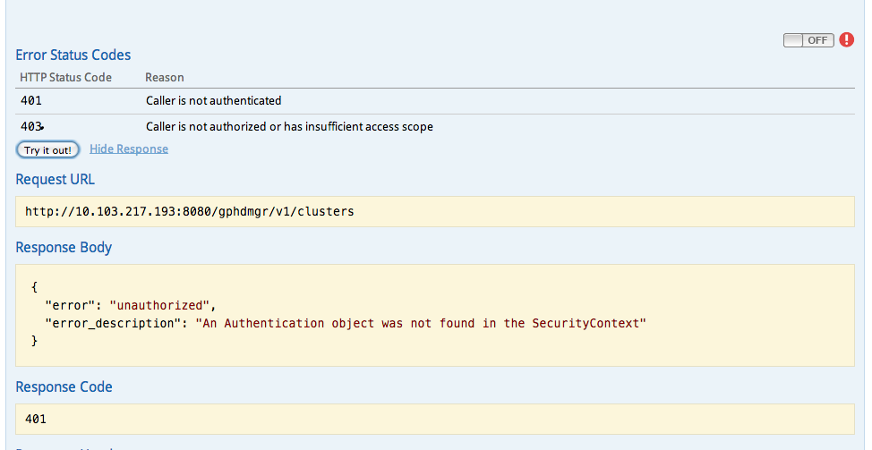

This topic contains instructions for using Swagger for PHD APIs using OAuth authentication.
- Swagger is a specification and complete framework implementation for describing, producing, consuming, and visualizing RESTful web services. The Swagger UI allows you to interact with the API in a sandbox UI.
- OAuth is an open standard for authentication.
To use the Swagger API with OAuth:
- Go to: https://<hostname>:8080/gphdmgr/api
The following Swagger UI appears:

- Click OFF (upper right of screen).
- You are prompted to Select OAuth2.0 Scopes.
Check both the read and write boxes, then click Authorize.
- You are prompted "Authentication Required" and you need to log in:

- On the Admin node, locate the password for gpadmin from
/usr/local/pivotal-cc/config/oauth2-users.conf. For example:
[root@centos65-1 config]# cat /usr/local/pivotal-cc/config/oauth2-users.conf gpadmin=jQk39cbeTx60o3kgeI-7hw,ROLE_USER,enabled
- Enter the username (gpadmin) and password you just retrieved into the "Authentication Required" prompt.
- After login, you can click Try it Out in the Swagger UI and you will get a successful response code.